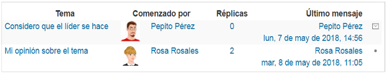

1.1. El perfil de usuario
La plataforma Moodle dispone de un espacio para que puedas ubicar tu perfil, es decir, la información personal que te identificará ante otros usuarios.
Gran parte de la información del perfil, será visible por todos los participantes inscritos en los cursos donde estés matriculado.
1.2. Elementos que componen el perfil de usuario
En este espacio se ubican elementos relacionados con:
- Información general: nombres y apellidos, dirección de correo, ciudad, país, zona horaria e idiomas, entre otros, así como una descripción de tu actividad laboral, académica o profesional.
- Una imagen que te permita ser identificado ante los demás.
- Nombres adicionales e intereses que quieras compartir.
- Información opcional: datos de contacto por otras redes, números telefónicos, entre otros.
Adicional a toda esta información, la vista pública del perfil te permite incluir elementos como:
- Miscelánea con notas, mensajes y demás participaciones en espacios de comunicación.
- Actividad de accesos a la plataforma
- Detalles del curso en el que estés matriculado

Ahora que conoces qué es el perfil de usuario de la plataforma Moodle, entérate a continuación de cómo podrás modificar los datos que hacen parte de él.
Cuando ingresas a tu perfil por primera vez, notarás que hay ciertos campos que ya contienen información por defecto. Esto sucede porque cuando se crea un usuario nuevo, para la plataforma es indispensable que éste tenga unos datos mínimos: identificación, nombre de usuario y correo electrónico; además, se ubicarán por defecto algunas configuraciones y datos adicionales predefinidos, como la ciudad y el país.
Es posible que por diferentes motivos requieras editar tu perfil de usuario en la plataforma, razón por la cual es importante conocer cómo realizar ajustes a dichos datos y/o agregar nuevos; por ejemplo, actualizar la imagen de identificación, modificar el correo electrónico o cambiar la ciudad de ubicación, entre otros.
A continuación te explicaremos los pasos que debes llevar a cabo para realizar dichas modificaciones.
2.1. Acceder al formulario de edición del perfil de usuario
Cuando necesites modificar la información del perfil de usuario, despliega el menú de acceso rápido haciendo clic en el Nombre de Usuario que puedes ver en la parte superior derecha de la pantalla; en el menú que se despliega haz clic en la opción Preferencias y allí selecciona la opción Editar perfil ubicada en el apartado Cuenta de usuario.
Ahora veamos un formulario con la información existente del usuario, quien tiene la posibilidad de modificarla según su necesidad.
Los campos marcados con un asterisco rojo son de carácter obligatorio, por consiguiente, si no son diligenciados, la plataforma no permitirá realizar la actualización, modificación o adición de la información.
En la ventana de datos de perfil se despliegan cinco (5) secciones:

Entérate de qué se trata cada una:
- General
-
2.2. Sección general
Esta sección contiene los campos referidos al Nombre, Apellidos, Dirección de correo, Mostrar correo (quiénes lo pueden ver), Ciudad, País, Zona horaria, Tema preferido (para visualizar los cursos) y la Descripción de la información personal que deseas compartir con los demás participantes.
Pasa el mouse por cada ítem para conocer su descripción.abcdefImagen 4. Sección General del formulario de edición del perfil de usuario (2019)
- Imagen de usuario
-
2.3. Sección Imágen de usuario
En esta sección se incluyen los campos relacionados con la imagen que utilizas para tu identificación; brindándote la posibilidad de borrarla, cargar una nueva imagen y hacer una descripción de esta.
Pasa el mouse por cada ítem para conocer su descripción.abcdeImagen 5. Sección Imagen del usuario del formulario de edición del perfil de usuario (2019)Tu imagen hace parte importante del perfil, pues te identifica ante los demás participantes de la plataforma. Ten en cuenta que esta debe tener un tamaño tipo documento (3cm * 4cm), buena resolución (utilizar formato jpg o png), a color y con tu rostro visible. Además:
- Evita que en la imagen esté muy alejado tu rostro.
- Procura no tener sombreros o gafas oscuras.
- La presentación personal es fundamental.
- Muy importante que solo aparezcas tú en la imagen, para evitar confusiones.
Desplaza a izquierda o derecha con el mouse para observar las diferencias.
 Imagen 6. Ejemplos de imágenes de usuario correctas e incorrectas, (2018)Es posible que al subirla no veas de inmediato la imagen, en ese caso, actualiza la página pulsando F5 o el botón Actualizar del navegador.
Imagen 6. Ejemplos de imágenes de usuario correctas e incorrectas, (2018)Es posible que al subirla no veas de inmediato la imagen, en ese caso, actualiza la página pulsando F5 o el botón Actualizar del navegador.
- Nombres adicionales
-
2.4. Sección Nombres Adicionales
Esta sección permite diligenciar los campos de los nombres adicionales del usuario como:
Nombre – fonético: indica cómo debe pronunciarse el nombre.
Apellido- fonético: indica cómo debe pronunciarse el apellido.
Nombre intermedio: indica otro nombre que tenga el usuario.
Nombre alterno: puede usarse para definir un alias del usuario.
 Imagen 7. Sección Nombres adicionales del formulario de edición del perfil de usuario, (2018)
Imagen 7. Sección Nombres adicionales del formulario de edición del perfil de usuario, (2018)Nombre Apellido Nombre intermedio Apellido fonético Nombre fonético Nombre alternativo Wolfang Mozart Amadeus Mosar Guolfang Clark Kent Superman Tabla 1. Ejemplos nombres adicionales, (2018)
- Intereses
-
2.5. Sección Intereses
Aquí tienes la posibilidad de publicar tus intereses personales. Cada interés o preferencia debes digitarlo en el campo Lista de intereses, separados por una coma y, automáticamente, se mostrarán como botones. Para borrarlos, basta con hacer clic en la X que acompaña cada interés.
Imagen 8. Sección Intereses del formulario de edición del perfil de usuario, (2018)
- Opcional
-
2.6. Sección Opcional
En esta sección es posible agregar información para que el usuario pueda ser contactado por medios diferentes a los que dispone la plataforma. Entre los datos que puede añadir se encuentran: página web, ID para mensajería, números de teléfono, dirección física e información de cuentas en redes sociales.
 Imagen 9. Sección Opcional del formulario de edición del perfil de usuario, (2018)
Imagen 9. Sección Opcional del formulario de edición del perfil de usuario, (2018)
Para finalizar la edición del perfil personal, basta con hacer clic en el botón Actualizar información personal y de este modo tú y tus compañeros podrán conocerse y reconocerse fácilmente en la plataforma UVirtual Académica.
Una vez terminado el proceso, la plataforma te llevará directamente al panel de Preferencias, donde existen otras opciones de configuración que podrían ser útiles en otros escenarios. La caja de opciones tiene la siguiente apariencia:

Contenido adaptado de:
- Programa Integración de Tecnologías a la Docencia (2010). Editar el perfil o la información personal. Banco de Objetos Virtuales de Aprendizaje – Universidad de Antioquia. Recuperado de http://aprendeenlinea.udea.edu.co/boa/contenidos.php/f61acedbc23ad2b03d76645b552a6fb4/300/1/contenido/ el 17 de mayo de 2018
- Programa Integración de Tecnologías a la Docencia (2010). Perfil en Moodle. Banco de Objetos Virtuales de Aprendizaje – Universidad de Antioquia. Recuperado de http://aprendeenlinea.udea.edu.co/boa/contenidos.php/c7ed1707f74f204e722ad823598d25e6/208/1/contenido/ el 17 de mayo de 2018
- Programa Integración de Tecnologías a la Docencia (2013). Editar perfil o información personal en Moodle 2.3. Banco de Objetos Virtuales de Aprendizaje – Universidad de Antioquia. Recuperado de http://aprendeenlinea.udea.edu.co/boa/contenidos.php/0cc79112fcd99fddc0233423a0923e24/945/1/contenido/
- Programa Integración de Tecnologías a la Docencia (2015). Cómo editar el perfil en Moodle 2.7. Banco de Objetos Virtuales de Aprendizaje – Universidad de Antioquia. Recuperado de http://aprendeenlinea.udea.edu.co/boa/contenidos.php/e77f6e2952c4215c8f50c0b91a4d4e25/1136/1/contenido/ el 17 de mayo de 2018
- Comunidad Moodle (2014). Campos de nombre adicionales. MoodleDocs. Recuperado de https://docs.moodle.org/all/es/Campos_de_nombre_adicionales el 17 de mayo de 2018
Imágenes adaptadas de:
- Vectorpocket - Freepik.com. Recuperado de https://www.freepik.es/vector-gratis/conjunto-de-iconos-de-avatar-redondo-del-arte-pop-para-los-usuarios-de-las-redes-sociales-blogs-iconos-de-perfil_1442435.htm el 17 de mayo de 2018
- Vectorpocket - Freepik.com. Recuperado de https://www.freepik.es/vector-gratis/conjunto-de-iconos-de-avatar-redondo-del-arte-pop-para-los-usuarios-de-las-redes-sociales-blogs-iconos-de-perfil_1472051.htm el 17 de mayo de 2018
- Vectorpocket - Freepik.com. Recuperado de https://www.freepik.es/vector-gratis/conjunto-de-icono-de-avatar-redondo-del-arte-pop-para-los-usuarios-de-las-redes-sociales-blogs-iconos-de-perfil_1472063.htm el 17 de mayo de 2018
- Vectorpocket - Freepik.com. Recuperado de https://www.freepik.es/vector-gratis/conjunto-de-iconos-de-avatar-redondo-del-arte-pop-para-los-usuarios-de-las-redes-sociales-blogs-iconos-de-perfil_1472059.htm el 17 de mayo de 2018
- Vectorpocket - Freepik.com. Recuperado de https://www.freepik.es/vector-gratis/conjunto-de-iconos-de-avatar-redondo-del-arte-pop-para-los-usuarios-de-las-redes-sociales-blogs-iconos-de-perfil_1472061.htm el 17 de mayo de 2018
- Vectorpocket - Freepik.com. Recuperado de https://www.freepik.es/vector-gratis/conjunto-de-iconos-de-avatar-redondo-del-arte-pop-para-los-usuarios-de-las-redes-sociales-blogs-iconos-de-perfil_1442400.htm el 17 de mayo de 2018
- Ddraw - Freepik.com. Recuperado de https://www.freepik.es/vector-gratis/avatares-de-mujeres-diferentes_1089194.htm el 17 de mayo de 2018
- Ddraw - Freepik.com. Recuperado de https://www.freepik.es/vector-gratis/avatares-de-hombres-diferentes_1089198.htm el 17 de mayo de 2018
Desarrollo de Contenidos
Carolina Llanos TobónAsesora en Formación e-learning
Corrección de estilos
Luisa Fernanda Mesa TobónAsesoría Técnica y Diseño Instruccional
Carolina Llanos TobónDiseño Gráfico
Santiago Hernández RestrepoIntegración de Contenidos
Sebastián Paniagua IsazaGestión Técnica y Administrativa
Carolina Llanos Tobón

1ª edición: noviembre 2019